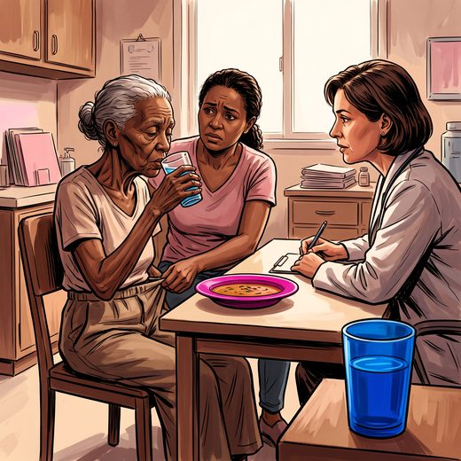

Consulta rápida à beira do leito
Condutas, doses e interações.
Referências da aula · 10
- Rémond D, Shahar DR, Gille D, et al. Understanding the gastrointestinal tract of the elderly to develop dietary solutions that prevent malnutrition. Oncotarget. 2015;6(16):13858-98. PMID 26091351. doi:10.18632/oncotarget.4030.PubMedDOI
- Soenen S, Rayner CK, Horowitz M, Jones KL. Gastric emptying in the elderly. Clin Geriatr Med. 2015;31(3):339-53. PMID 26195094.PubMed
- Wirth R, Dziewas R, Beck AM, et al. Oropharyngeal dysphagia in older persons — from pathophysiology to adequate intervention: a review and summary of an international expert meeting. Clin Interv Aging. 2016;11:189-208. PMID 26966356. doi:10.2147/CIA.S97481.PubMedDOI
- Baijens LW, Clavé P, Cras P, et al. European Society for Swallowing Disorders – European Union Geriatric Medicine Society white paper: oropharyngeal dysphagia as a geriatric syndrome. Clin Interv Aging. 2016;11:1403-28. PMID 27785002. doi:10.2147/CIA.S107750.PubMedDOI
- Hurwitz A, Brady DA, Schaal SE, Samloff IM, Dedon J, Ruhl CE. Gastric acidity in older adults. JAMA. 1997;278(8):659-62. PMID 9272898.PubMed
- Bharucha AE, Lacy BE. Mechanisms, evaluation, and management of chronic constipation. Gastroenterology. 2020;158(5):1232-49. PMID 31945360. doi:10.1053/j.gastro.2019.12.034.PubMedDOI
- DiMagno EP, Go VL, Summerskill WH. Relations between pancreatic enzyme outputs and malabsorption in severe pancreatic insufficiency. N Engl J Med. 1973;288(16):813-5. PMID 4693931.PubMed
- Mangoni AA, Jackson SH. Age-related changes in pharmacokinetics and pharmacodynamics: basic principles and practical applications. Br J Clin Pharmacol. 2004;57(1):6-14. PMID 14678335. doi:10.1046/j.1365-2125.2003.02007.x.PubMedDOI
- Ship JA, Pillemer SR, Baum BJ. Xerostomia and the geriatric patient. J Am Geriatr Soc. 2002;50(3):535-43. PMID 11943053.PubMed
- Freitas EV, Py L, organizadores. Tratado de Geriatria e Gerontologia. 5ª ed. Rio de Janeiro: Guanabara Koogan; 2022.
Documentos oficiais
Leis e publicações do Ministério da Saúde sobre o cuidado da pessoa idosa, de acesso livre.
Abrir os documentos